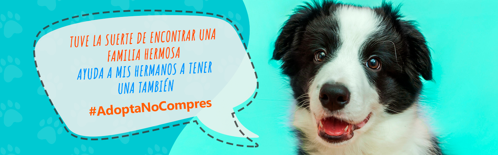

Este guapo perruno color blanco con café, Tiene aprox cinco años de edad y está esperando una familia
Comprar
Esta preciosura tiene poco más de un año de edad, hermoso pelaje muy tierno. Se lleva bien con niños,.
Comprar
Tierno, dulce, inteligente, curioso y adaptable, le encanta que le hagan cariños y regalonear con las personas
Comprar
¿QUIENES SOMOS?
Somos una fundación protectora de animales legalmente
constituida en Santiago de Chile, que surge de la necesidad
de proteger a animales domésticos en situación de maltrato o
abandono, y busca desarrollar una cultura de protección activa
de la vida animal.En Fundación 4 Patitas estamos convencidos
que para promover el rescate y adopción animal es necesario hacerse ver:
salir a la calle, buscar instancias, encontrar nuevas vitrinas y generar
instancias en donde nos demos a conocer, y potenciales familias conozcan
a nuestros rescatados. Siempre estamos haciendo acciones que merecen ser
conocidas. Conoce acá nuestras últimas iniciativas, rescates y logros
conseguidos y que te queremos contar.